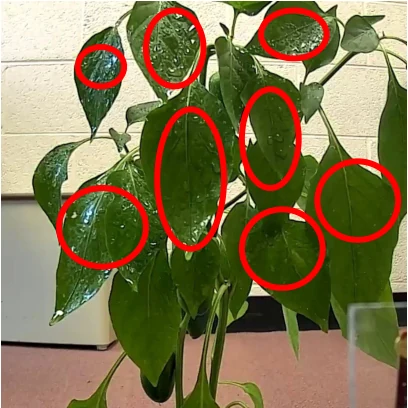
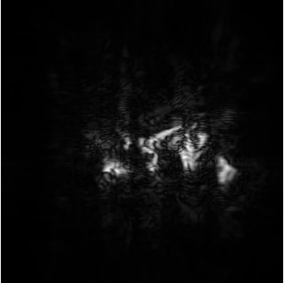

Ph.D. candidate · Michigan State University
Understanding a worldwe can only partly see.
Multimodal sensing · Physical-world understanding


One plant. Two ways of seeing.Real observations from Proteus.